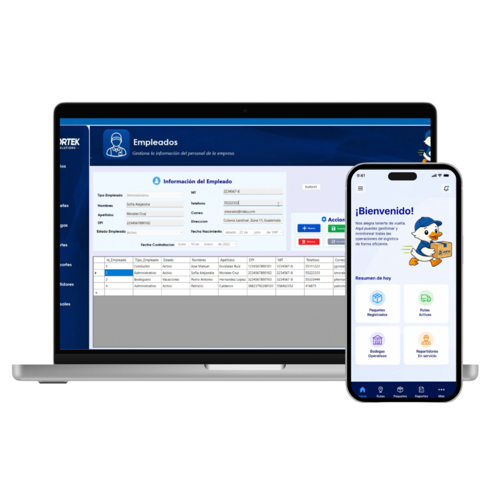

Proyecto 01
Sistema de Reparto
Sistema de gestión logística desarrollado en C# con SQL Server para la administración de pedidos, usuarios y asignación de rutas de una empresa de reparto. Incluye control de roles y permisos, operaciones CRUD, asignación transaccional de rutas, y sincronización de datos entre máquinas virtuales mediante replicación de base de datos para garantizar alta disponibilidad.
C#SQL Server
Entity FrameworkGit